library(sf)
library(tmap)
slo_borders = read_sf("data/slovenia/slo_border.gpkg")
slo_regions = read_sf("data/slovenia/slo_regions.gpkg")
slo_cities = read_sf("data/slovenia/slo_cities.gpkg")
tm = tm_shape(slo_borders) +
tm_polygons() +
tm_shape(slo_regions) +
tm_polygons(fill = "region_group") +
tm_text(text = "region_name", size = "population") +
tm_credits("Data source: GISCO Eurostat database", fontface = "bold") +
tm_title("Slovenia")
tm12 Map layout
Map layout relates to all of the visual aspects of the created plot except the visual variables (Chapter 7), legends (Section 9.1), and map components (Chapter 10). It includes the map background, frame, typography, scale, aspect ratio, margins, and more.
We can customize the map layout using the tm_layout() function. In this chapter, we cover the most often used arguments of this function using a map of Slovenia’s regions as an example (Figure 12.1).
12.1 Colors
The most basic map layout customization is the color of the map background. Actually, there are a few separate zones on the map that can be colored – it includes, among others, the map background, the outer space background, and the map legend background (Figure 12.2). They can be customized with the bg.color, outer.bg.color, and legend.bg.color arguments of the tm_layout() function.
tm +
tm_layout(bg.color = "lightgreen",
outer.bg.color = "forestgreen",
legend.bg.color = "lightblue")
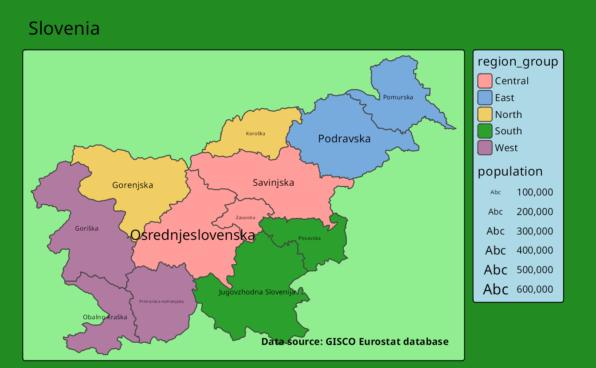
The tm_layout() function also has tools to modify the complete map color style with arguments such as color.saturation, color.sepia_intensity, and color_vision_deficiency_sim. The first one represents the saturation of all colors on the map, including the backgrounds, as well as visual variables such as the fill or color of polygons and lines. The color.saturation parameter accepts a value between 0 and 1, where 0 means no color saturation (i.e., the map is black and white), and 1 means full-color saturation (i.e., the map is colorful, default) (Figure 12.3).
tm +
tm_layout(color.saturation = 0)
tm +
tm_layout(color.saturation = 0.4)
tm +
tm_layout(color.saturation = 0.7)
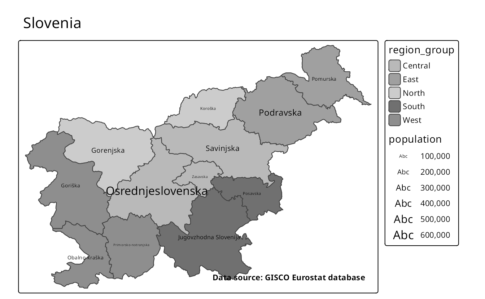
0
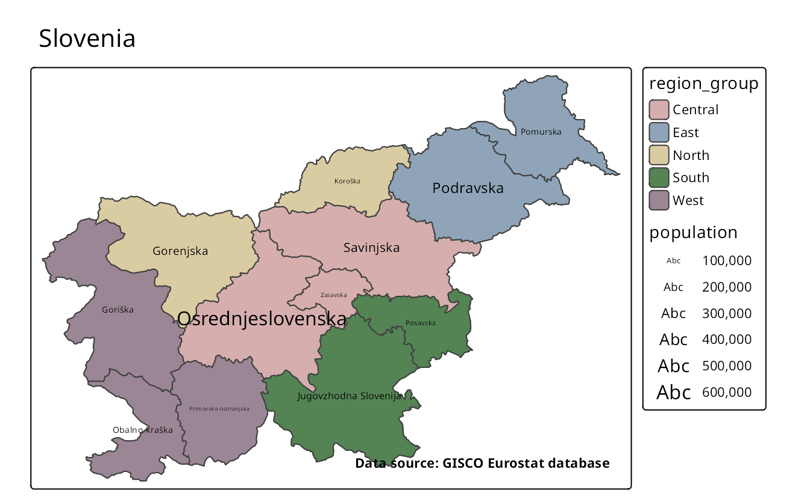
0.4
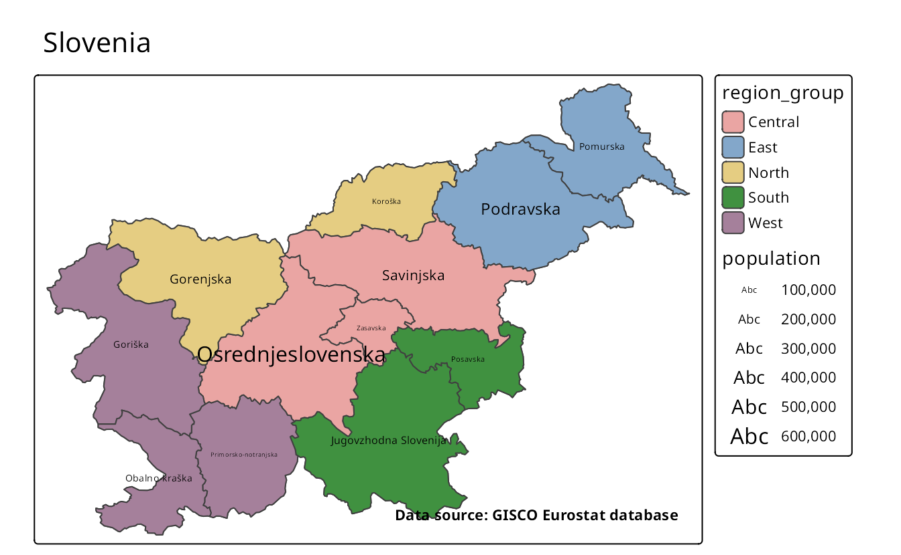
0.7
color.saturation argument on the map layout.
The color.sepia_intensity argument allows to apply a sepia filter to the map. Its value can be set between 0 and 1, where 0 means no sepia filter (i.e., the map is colorful, default), and 1 means full sepia filter (i.e., the map is brownish) (Figure 12.4).
tm +
tm_layout(color.sepia_intensity = 0.4)
tm +
tm_layout(color.sepia_intensity = 0.7)
tm +
tm_layout(color.sepia_intensity = 1)
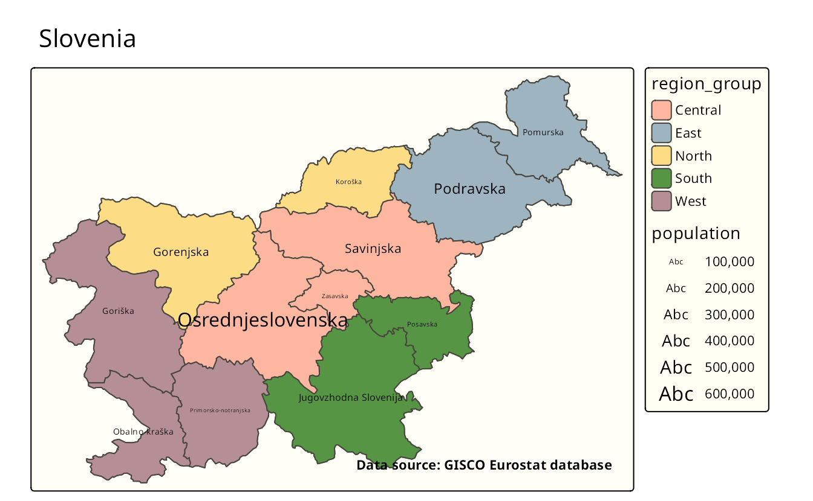
0.4
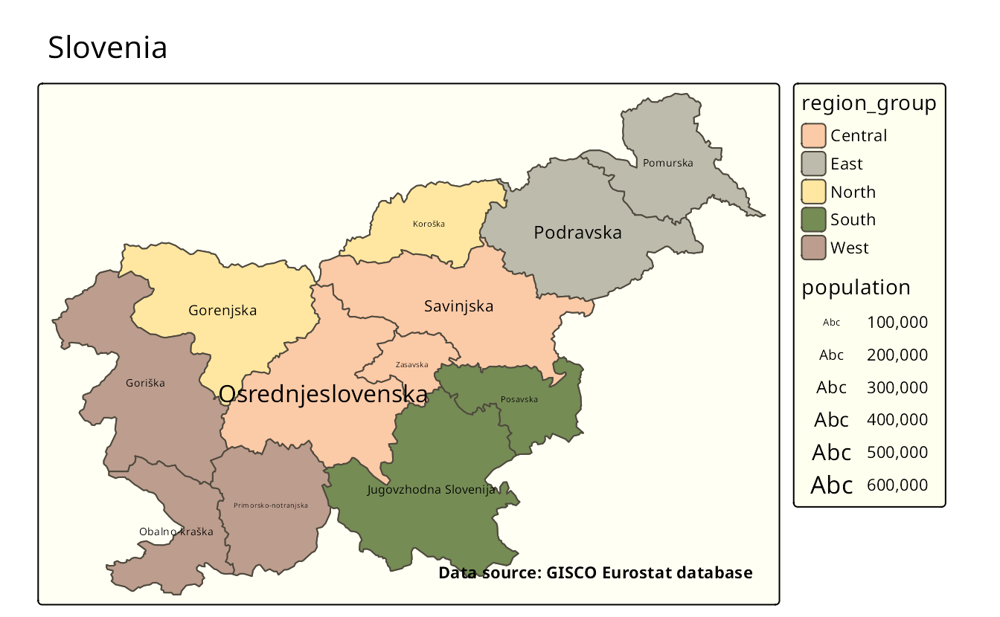
0.7
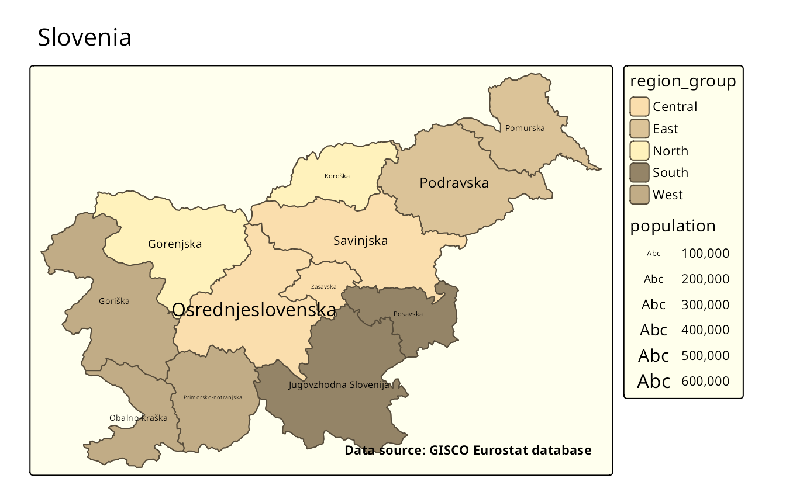
1
color.sepia_intensity argument on the map layout.
Both of the above options aim to change the overall map look and feel. The color_vision_deficiency_sim has a different purpose: it enables us to visualize how the map would appear to people with different color vision deficiencies. Three main types of color vision deficiencies are: protanopia (red-green color blindness, "protan"), deuteranopia (red-green color blindness, "deutan"), and tritanopia (blue-yellow color blindness, "tritan").
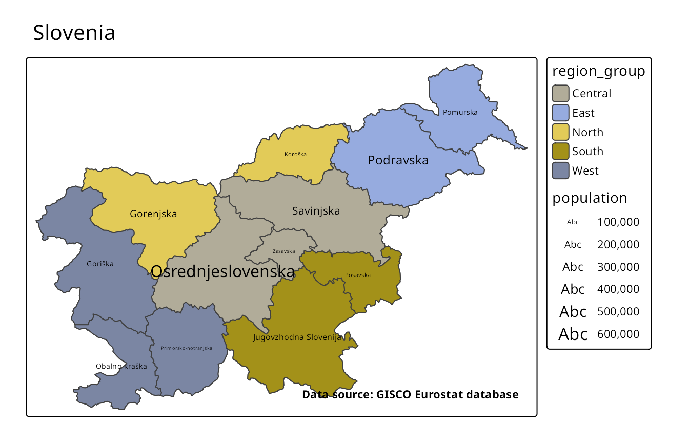
"protan"
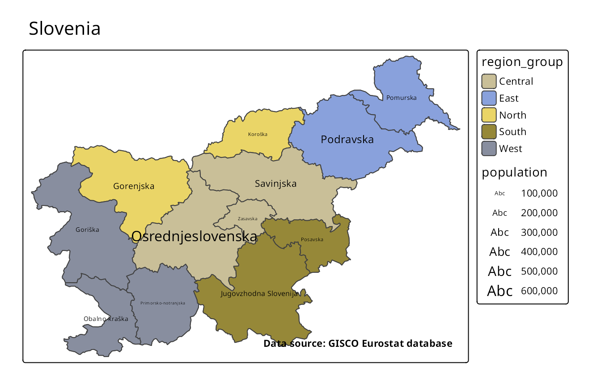
"deutan"
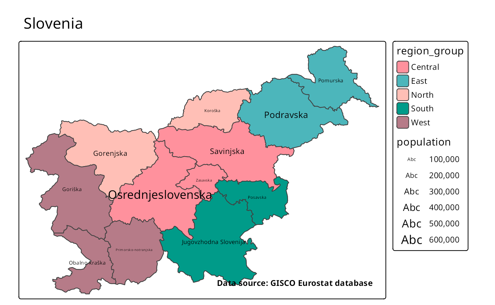
"tritan"
color_vision_deficiency_sim argument on the map layout.
12.2 Frame
Another possibility to change the map look is to customize the frame around the map content. Its style depends on several arguments of the tm_layout() function. For example, frame.color, frame.alpha, and frame.lwd change the frame color, transparency (0-1), and line width, respectively (Figure 12.6 (a)).
tm +
tm_layout(frame.color = "black",
frame.alpha = 0.6,
frame.lwd = 8)Other arguments that can be used to customize the frame are frame.r and frame.double_line (Figure 12.6 (b)). The first one makes the corners of the frame rounded – the value of 0 means no rounding, while 30 means that the corners are rounded with a radius of 30. The second one allows to add a second frame line around the frame.
tm +
tm_layout(frame.r = 30,
frame.double_line = TRUE)Finally, we can remove the frame completely by setting the frame argument to FALSE (Figure 12.6 (c)).
tm +
tm_layout(frame = FALSE)
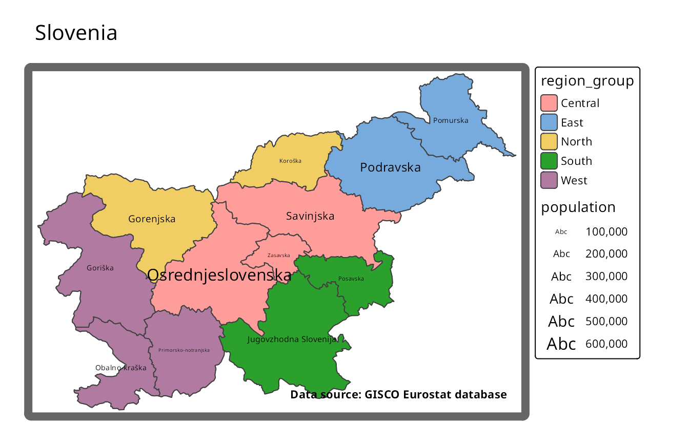
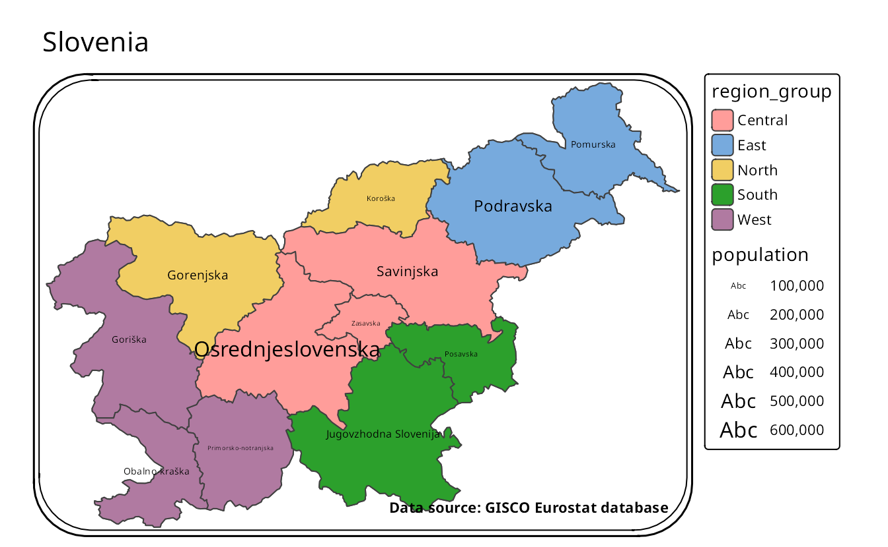
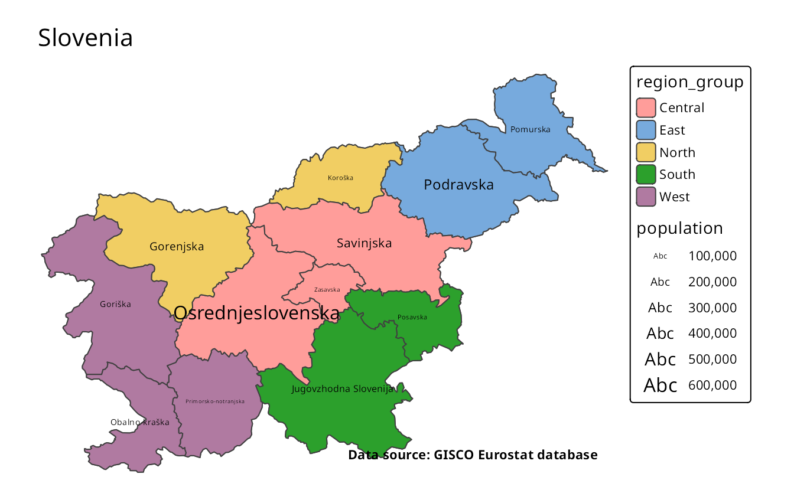
12.3 Typography
The decision about the used fonts is often neglected when creating programmable plots and maps. Most often, the default fonts are used in these kinds of graphs. This, however, could be a missed opportunity. A lot of map information is expressed by text, including text labels (Section 6.4), legend labels, text in map components (Chapter 10), or the map title (Section 9.2). The used fonts impact the tone of the map (Guidero 2017), and their customization allows for a map to stand out from maps using default options.
As we mentioned above, many different map elements can be expressed or can use fonts. In theory, we are able to set different fonts to each of them. However, this could result in a confusing visual mix that would hinder our map information. Therefore, the decision on the used fonts should be taken after considering the main map message, expected map audience, other related graph styles, etc. In the following three sections, we explain font families and font faces, and give some overall tips on font selections, show how to define used fonts, and how to customize fonts on maps.
12.3.1 Font families and faces
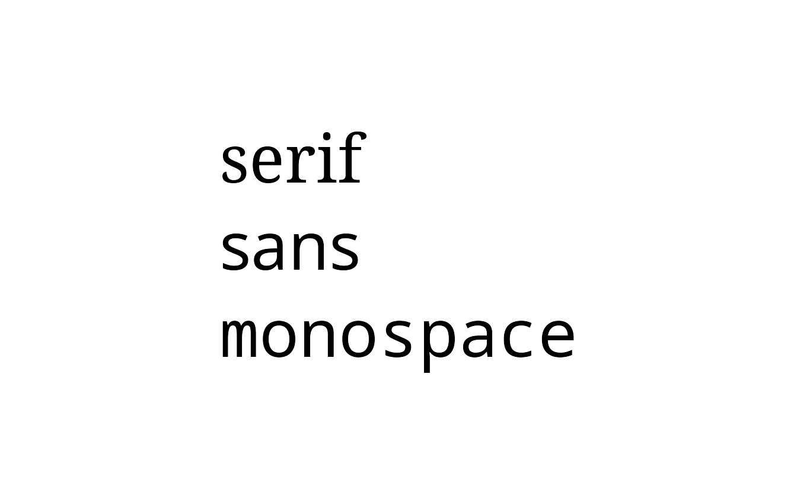
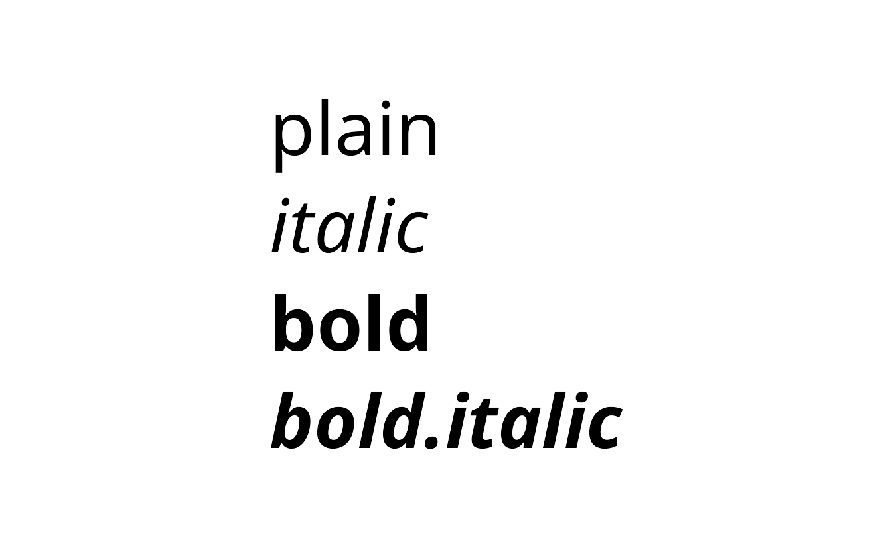
In tmap, fonts are represented by a font family (Figure 12.7 (a)) and a font face (Figure 12.7 (b)). A font family is a collection of closely related lettering designs. Examples of font families include Times, Helvetica, Courier, Palatino, etc. On the other hand, font faces, such as italic or bold, influence the orientation or width of the fonts. A font is, thus, a combination of a selected font family and font face.
There are a few general font families, such as serifs, sans serifs, and monospaced fonts. Fonts from the serif family have small lines (known as a serif) attached to the end of some letters. Notice, for example, short horizontal lines on the bottom of letters r, i, and f or vertical lines at the ends of the letter s in the top row of Figure 12.7 (a). The fonts in this family are often viewed as more formal. On the other hand, the sans serif family do not have serifs and is considered more informal and modern. The last font family, monospaced fonts, is often used in computer programming (IDEs, software text editors), but less often on maps. A distinguishing feature of the monospaced fonts is that each letter or character in this family has the same width. Therefore, letters, such as i and a will occupy the same space in the monospaced fonts.
Mixing the use of serif and sans serif fonts often works well for maps. However, a rule of thumb is not to mix more than two font families on one map. A sans serif font can be used to label cultural objects, while serif fonts to label physical features. Then, italics, for example, can be used to distinguish water areas. The role of bold font faces, together with increased font size, is to highlight the hierarchy of labels – larger, bold fonts indicate more prominent map features. Additionally, customizing the fonts’ colors can be helpful to distinguish different groups of map objects.
The decision on which fonts to use should also relates to the expected map look and feel. Each font family has a distinct personality (creates a “semantic effect”), which can affect how the map is perceived. Some fonts are more formal, some are less. Some fonts have a modern look, while others look more traditional. Another important concern is personal taste or map branding. We should filter the decision about the used fonts based on our preferences or even our sense of beauty as it could create more personal and unique maps. We just need to remember about the readability of the fonts – they should not be too elaborate as it can hinder the main map message.
12.3.2 Fonts available in tmap
Before we discuss how to set a font family and its face, it is important to highlight that a different set of fonts could exist for each operating system (and even each computer). Additionally, which fonts are available and how they are supported depends on the used graphic device. A graphic device is a place where a plot or map is rendered. The most commonly it is a some kind of a screen device, where we can see our plot or map directly after running the R code. Other graphic devices allow for saving plots or maps as files in various formats (e.g., .png, .jpg, .pdf). Therefore, it is possible to get different fonts on your map on the screen, and a (slightly) different one when saved to a file. Visit ?Devices or read the Graphic Devices chapter of Peng (2016) to learn more about graphic devices.
The tmap package has two mechanism to select a font family. The first one is by specifying on of three general font families: "serif", "sans", or "monospace". It tries to match selected general font family with a font family existing on the operating system. For example, "serif" could the "Times" font family, "sans" – "Helvetica" or "Arial", and "monospace" – "Courier" (Figure 12.7 (a)). The second mechanism allows to select a font family based on its name (e.g., "Times" or "Palatino"). Next, a member of the selected font families can be selected with one of the font faces: "plain", "italic", "bold", and "bold.italic" (Figure 12.7 (b)).
As mentioned before, available fonts depend on the computer setup (including operating system) and used graphic device. Fonts available on the operating system can be checked with the system_fonts() function of the systemfonts package (Pedersen, Ooms, and Govett 2021) (result not shown).
Information on installing and debugging custom fonts can be found in a blog post by June Choe and in the showtext package (Qiu and See file AUTHORS for details. 2021) documentation.
The next step is to either view or save the map. This also means that we need to carry over our fonts to the output window/file, which largely depends on the selected graphic device. In general, screen device or graphical raster output formats, such as PNG, JPEG, or TIFF, works well with custom fonts as they rasterize them during saving. In case of any problems with graphical raster outputs, it is possible to try alternative graphics devices implemented in the ragg package (Pedersen and Shemanarev 2021). On the other hand, graphical vector formats, such as PDF or SVG, could have some problems with saving maps containing custom fonts1. The PDF device in R, by default, adds metadata about the used fonts, but does not store them. When the PDF reader shows the document, it tries to locate the font on your computer, and use other fonts when the expected one does not exist. An alternative approach is called embedding, which adds a copy of each necessary font to the PDF file itself. Gladly, the creation of a PDF with proper fonts can be achieved in a few ways. Firstly, it could be worth trying some alternative graphic devices such as cairo_pdf or svglite::svglite. The second option is to use the showtext package (Qiu and See file AUTHORS for details. 2021), which converts text into color-filled polygonal outlines for graphical vector formats. Thirdly, the extrafont (Chang 2014) package allows embedding the fonts in the PDF file, which makes PDFs properly displayed on computers that do not have the given font.
12.3.3 Fonts on maps
By default, tmap uses the "sans" font family with the "plain" font face (Figure 12.7). There are, however, three ways to customize the used fonts. The first one is to change all of the fonts and font faces for the whole map at once (Figure 12.8 (a)). This can be done with the text.fontfamily and text.fontface arguments of tm_layout().
tm +
tm_layout(
text.fontface = "italic",
text.fontfamily = "serif"
)The second way is to specify just some text elements independently (Figure 12.8 (b)). Many tmap functions, such as tm_text() or tm_credits(), have their own fontfamily and fontface arguments that can be adjusted. Additionally, tm_layout() allows to customize fonts for other map elements using prefixed arguments, such as, title.fontface or legend.title.fontfamily.
tm +
tm_layout(
title.fontface = "bold.italic",
legend.title.fontfamily = "monospace"
)
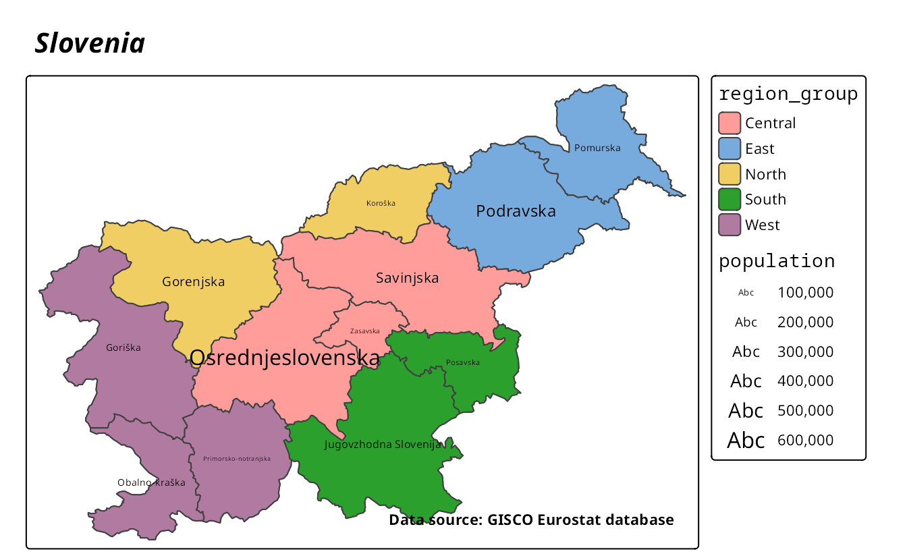
12.4 Scale
The tmap package has a set of default sizes and widths for various map elements, such as the frame, text, borders, symbol sizes, and more. In the previous parts of this book, we modify some of these values for selected elements, such as the frame width or text size. At the same time, we can also change the size of all of the map elements at once – this is a role of the scale argument of the tm_layout() function.
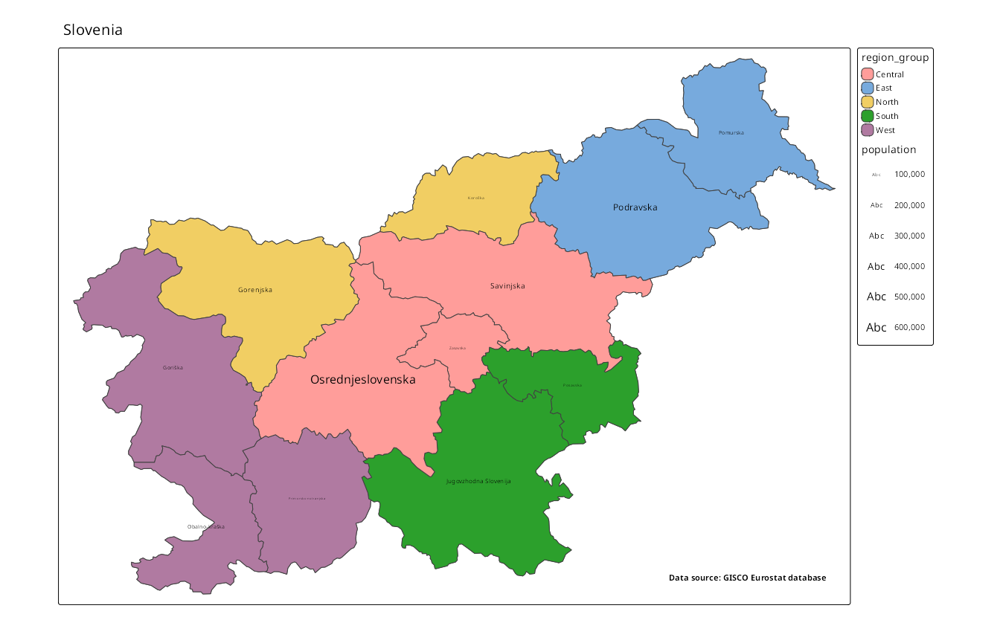
scale = 0.5
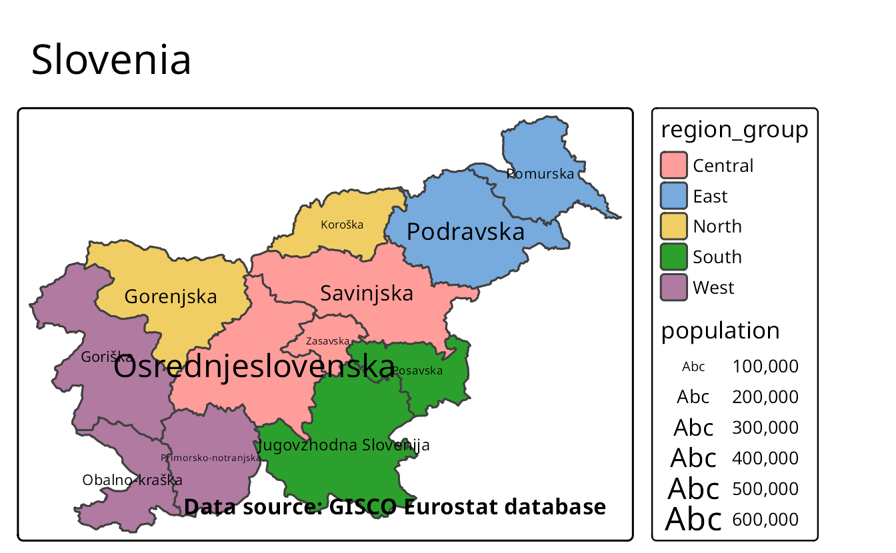
scale = 1.5
12.5 Design mode
Maps consist of various components, including the map content (with its frame), additional map elements (e.g., credits or a title), and the legend, which are often located in different places. They also have numerous margins – spaces between data and the frame, spaces between the frame and the plotting, spaces between the icons and the labels, etc.
Many of these properties can be customized, however, it may be difficult to understand the effect of the changes. To make it easier, tmap has a design mode that can be turned on by setting the tmap_design_mode() function to TRUE. When the design mode is turned on, the map is displayed in a special way: it shows all of the created map content, but also adds various lines and colored areas to the map. Additionally, it returns a small table in the R console with sizes and an aspect ratio of the device, plot, facets, and map areas.
tmap_design_mode(TRUE)
#> design.mode: ON
tm
#> ---------------W (in)-H (in)-asp---
#> | device 7.00 4.32 1.62 |
#> | plot area 6.47 4.15 1.56 |
#> | facets area 5.29 3.75 1.41 |
#> | map area 5.19 3.65 1.42 |
#> --------------------------------
#> Color codings:
#> - light blue outer margins
#> - dark blue buffers around outside cells
#> - light green outside cells
#> - dark green x and ylab cells
#> - pink panels
#> - red margins for outside grid labels
#> - orange margins around maps for grid labels
#> - yellow map area
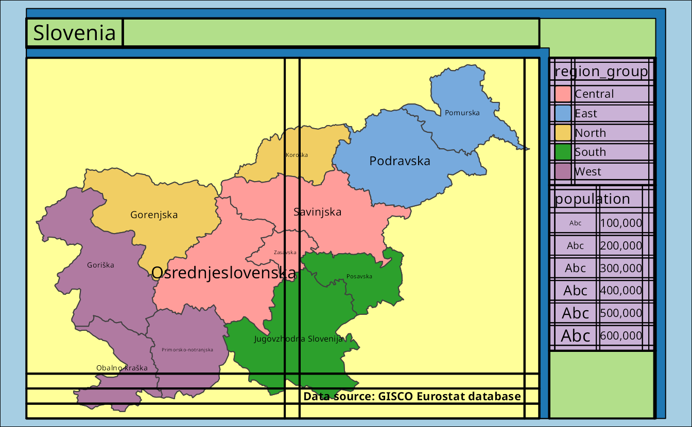
We may see an example of a map in the design mode in Figure 12.10. Its colors relate to the map and the margins around the map content. For example, the map area is colored yellow, the outside cells (used, for instance, for legends and titles) are in light green, and the outer margins are in light blue. A complete list of the color codings is shown in Table 12.1.
| Color | Element |
|---|---|
| Outer margins | |
| Buffers around outside cells | |
| Outside cells | |
| X and Y labels | |
| Panels | |
| Margins for outside grid labels | |
| Margins around maps for grid labels | |
| Map area |
The design mode is useful to understand how the map is constructed and how the various arguments of the tm_layout() function impact the map layout.
This mode is in place until the tmap_design_mode() function is set to FALSE. In the next few sections, we will show how the design mode can help us to understand the impact of various arguments of the tm_layout() function on the aspect ratio and margins of the map.
12.6 Aspect ratio
The aspect ratio specifies the relation between the width and height of the map area of the plot. For statistical plots, aspect ratios usually adjust to the plotting space – thus, customization of an aspect ratio is usually not needed. For maps, this is not the case – we should not change the relation between the width and height of the data in a map as it has a specific projection that determines the spatial relation between the map features.
By default, the aspect ratio of the tmap is set to NA, which means that it is adjusted to the used shapes (Figure 12.1).
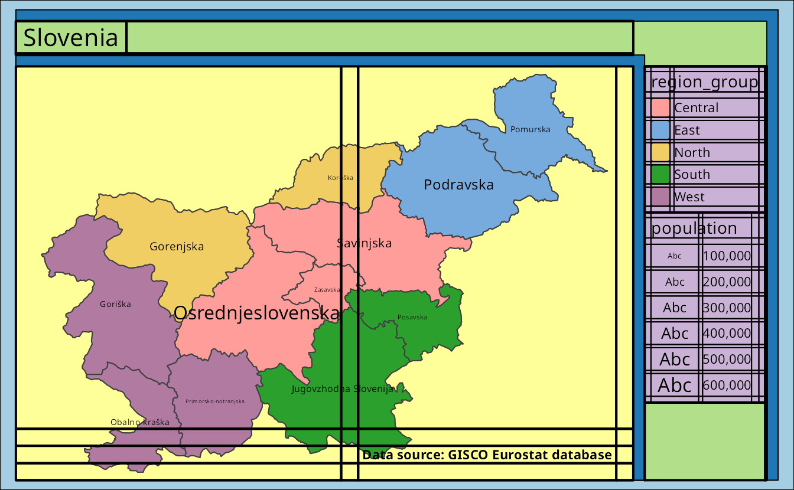
asp = 0
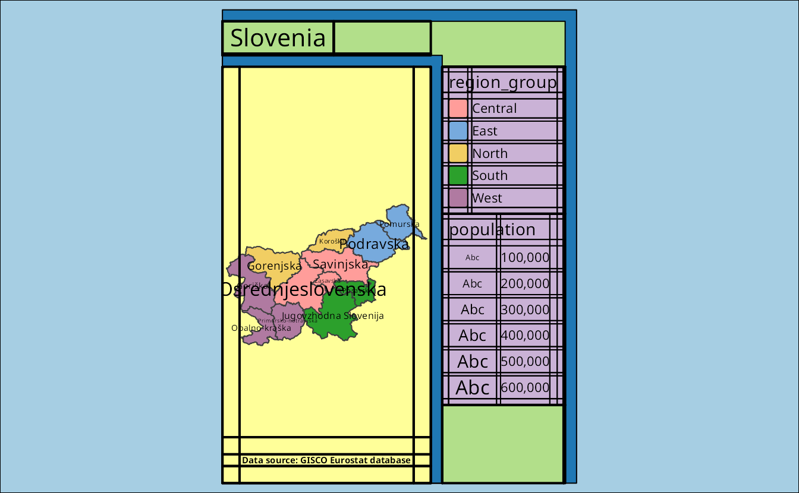
asp = 0.5
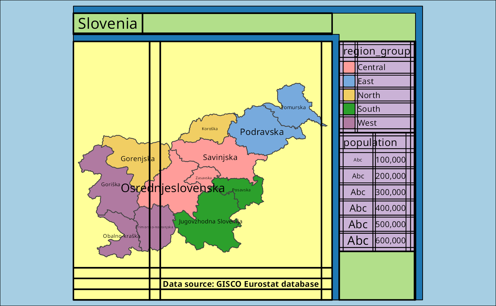
asp = 1
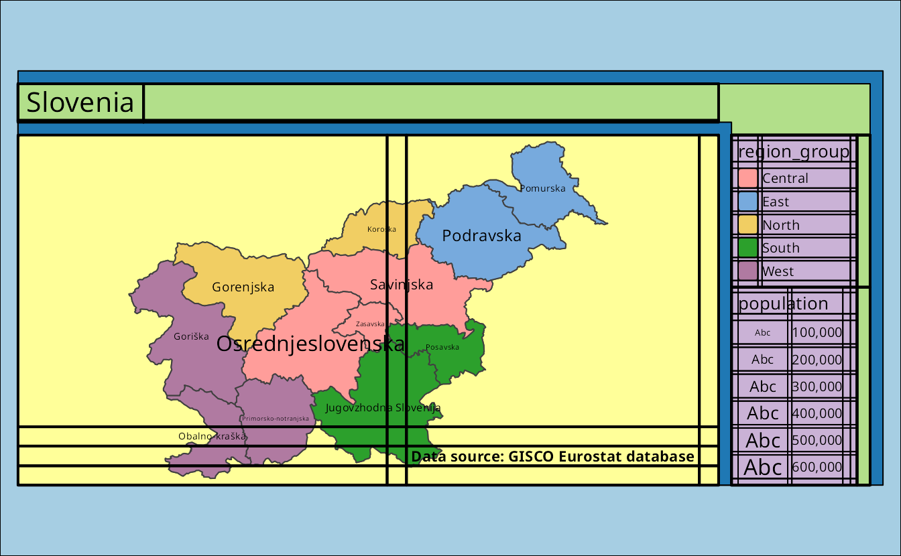
asp = 2
12.7 Margins
Margins are spaces around the map content, which can be used to separate the map from other elements, such as the legend or the title or separate the map from the extent of the plotting area. They may serve various purposes, such as to make the map more readable, to avoid overlapping the map content with other elements, to create space for additional elements. On the other hand, making margins smaller can help to increase the map area or make the map more condensed.
There are several arguments in tm_layout() related to margins. All of the margin arguments can be customized either with a single value (which is then applied to all sides) or with a vector of four values, which represent the bottom, left, top, and right margins. The most important margins arguments are inner.margins and outer.margins.
The inner margins are spaces between the map content (e.g., symbols, lines, polygons, raster) and the frame of the map (Figure 12.12). By default, the inner margins are set to c(0.02, 0.02, 0.02, 0.02), which means that there is a 2% margin on each side of the map content (Figure 12.1). An exception to this rule is raster maps, where the inner margins are set to c(0, 0, 0, 0) – meaning that there are no margins around the raster map content – by default. Increasing the inner margins can help to avoid overlapping of the map content with other elements, such as the legend or the title – for example, we could add some margin on the right side of the map and then place the legend there.
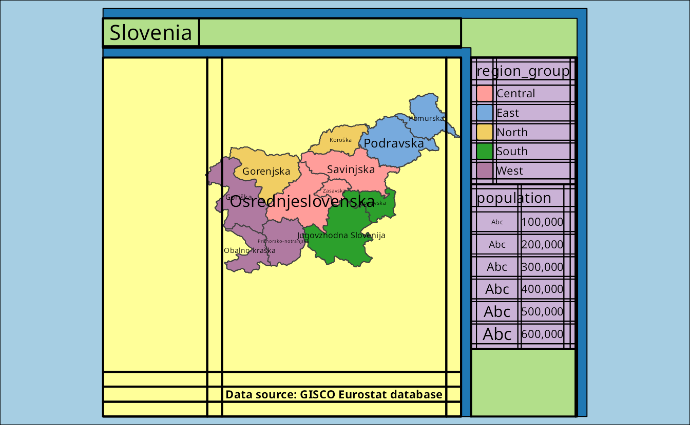
c(0.8, 0.4, 0.2, 0)
inner.margins argument on the map layout.
Outer margins are spaces between the map frame and the plotting area (Figure 12.13). By default, they are always set to c(0.02, 0.02, 0.02, 0.02), which means that there is a 2% margin outside of the map frame – giving a small “breathing space” around the map (Figure 12.1). We can increase it on a specific side, for example, to create more space for the legend or other map elements or we can remove it completely to, for example, arrange the map in a grid with other maps (Chapter 15) (Figure 12.13).
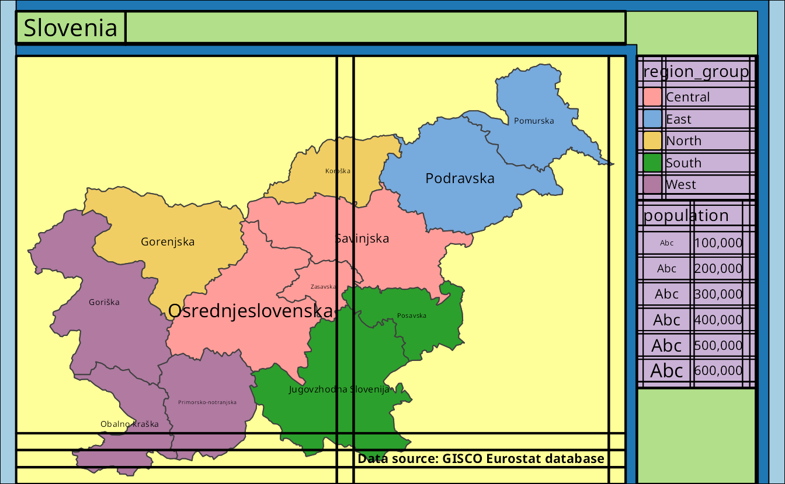
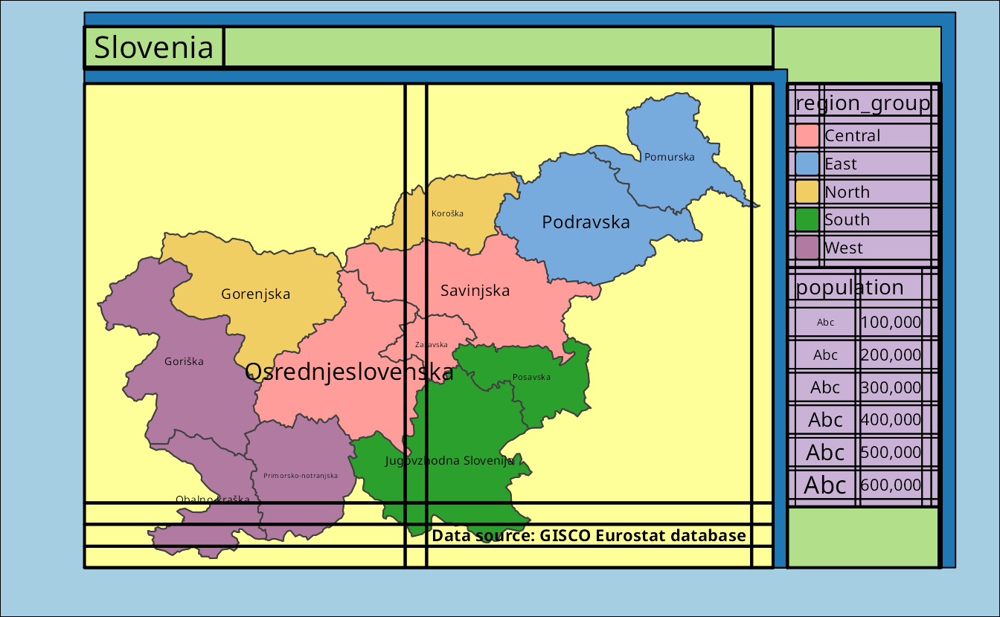
c(0.08, 0.04, 0.02, 0)
outer.margins argument on the map layout.
Now, as we have seen how the design mode can help us to understand the impact of various arguments of the tm_layout() function, we can turn it off.
tmap_design_mode(FALSE)
#> design.mode: OFFYou can get the
invalid font typeerror when saving the file.↩︎